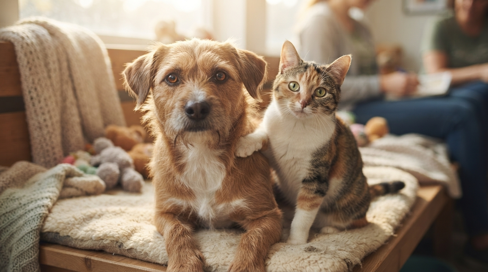

APA Salvando Huellas Madrid
Detrás de cada huella hay una historia. Rescatamos, cuidamos y acompañamos a perros y gatos hasta que encuentran una familia responsable.
Adopciones responsables, historias reales y mucho cariño.

Somos una asociación comprometida con el rescate, la protección y el bienestar animal. Les damos los cuidados que necesitan, les ayudamos a recuperar la confianza y buscamos familias responsables para toda la vida.
Nuestro compromiso va mucho más allá de encontrarles una familia: les acompañamos y cuidamos para que nunca vuelvan a sentirse solos.
Conoce a los animales que esperan una familia responsable y un hogar definitivo.
Ver animales →Acoge temporalmente a un animal mientras encuentra a su familia para siempre.
Saber más →Tu apoyo contribuye a cubrir gastos veterinarios, alimentación y cuidados.
Formas de ayuda →